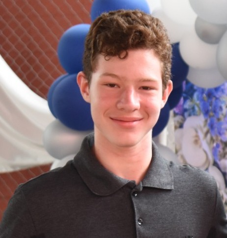
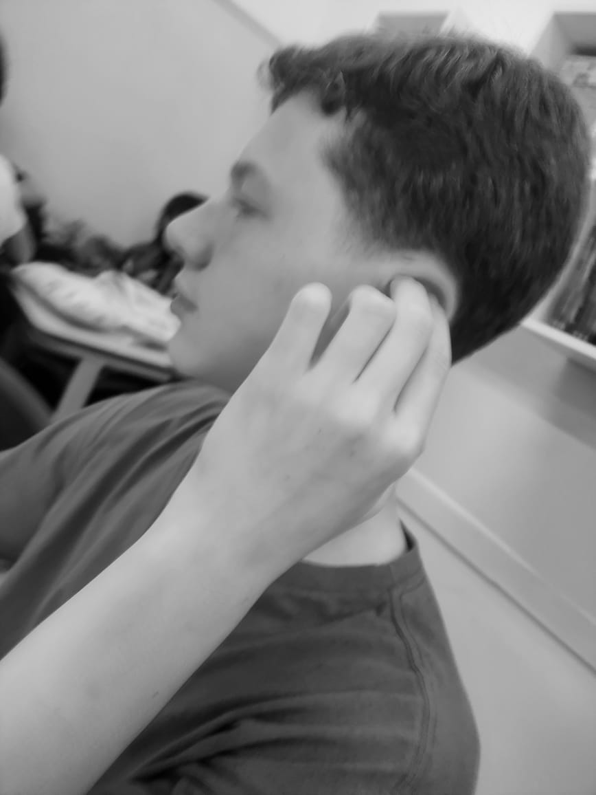
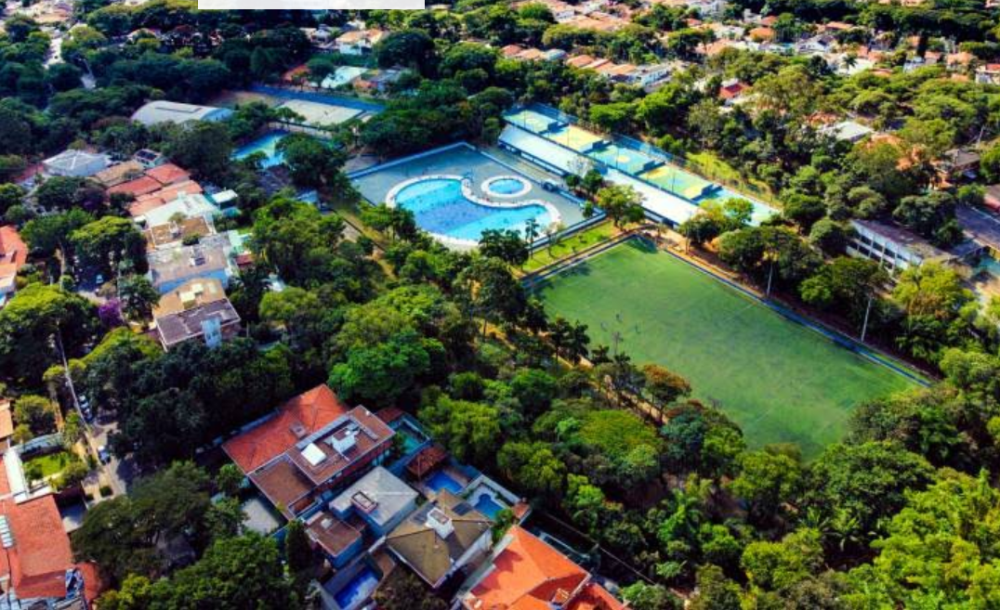
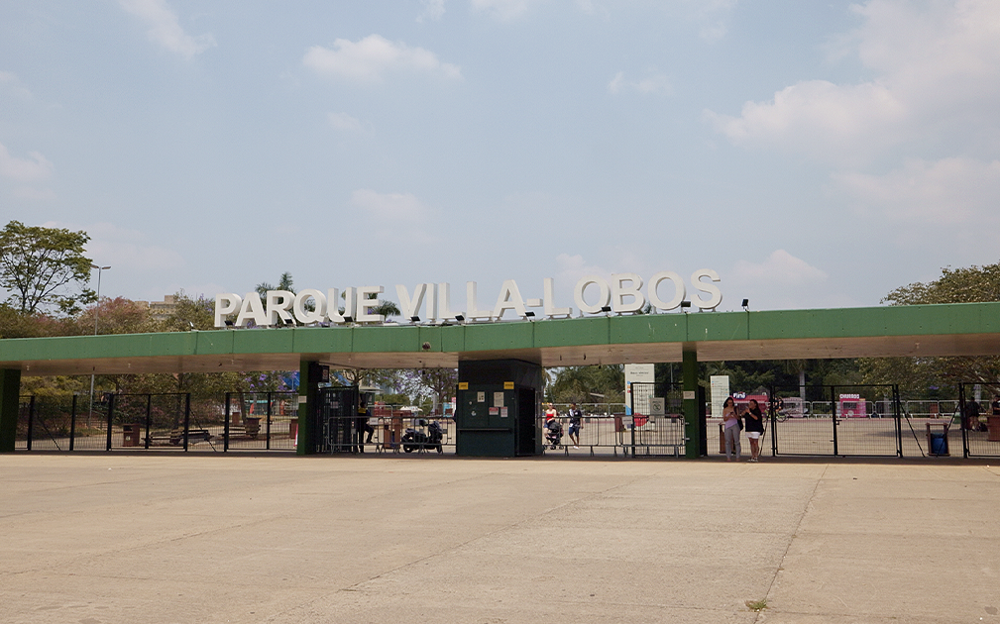
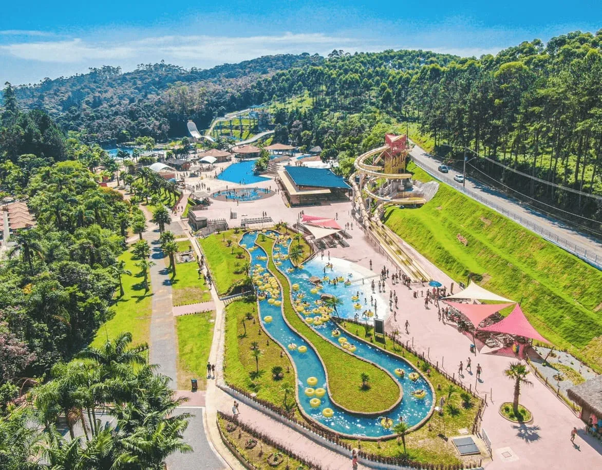
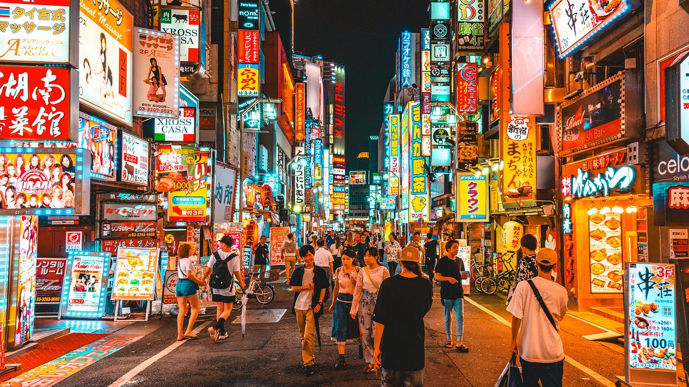
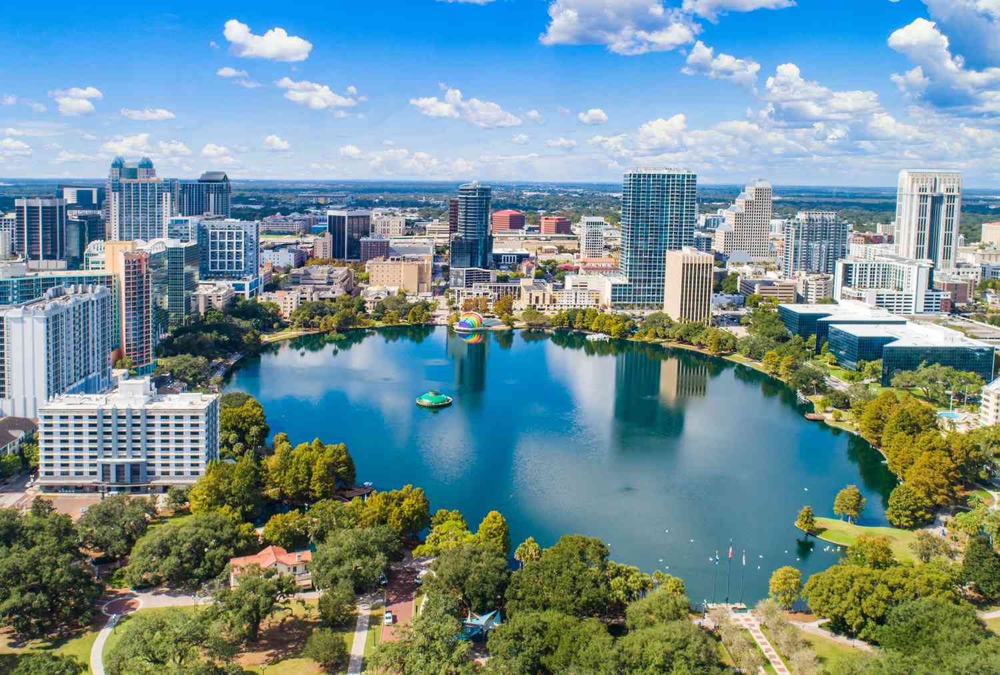

Vôlei
Meu esporte favorito. Jogar como ponteiro e conhecer gente nova faz parte da diversão.
Também conhecido como Fernando Neto Zaia. Estudante de tecnologia, apaixonado por vôlei e sempre pronto para uma nova partida, história ou aventura.


Meu nome é Fernando Neto Zaia, mas já me chamaram de Zaia, Neto, Fê, Nando e Fer. Pode escolher o que preferir — eu respondo por todos.
Estudo na Germinare, uma escola voltada à tecnologia, e moro na Lapa, em São Paulo. Gosto de aprender coisas novas e aproveitar o tempo com as pessoas e atividades que fazem sentido para mim.
Na quadra, meu lugar é como ponteiro no vôlei. Fora dela, estou sempre entre jogos, leituras e músicas para cada momento.
Tenho vários interesses e não gosto de ficar preso a uma coisa só. Cada um deles faz parte de quem eu sou.
Meu esporte favorito. Jogar como ponteiro e conhecer gente nova faz parte da diversão.
Se tem um jogo envolvido, é bem provável que eu queira participar.
Gosto de mergulhar em histórias e descobrir perspectivas diferentes.
Meu gosto é variado. A playlist muda de acordo com o meu humor.
Três lugares com boas lembranças: partidas, passeios de bicicleta e dias inteiros de diversão.

LAPA • SÃO PAULOO Clube Edson Arantes do Nascimento é um dos meus pontos favoritos para jogar vôlei, encontrar conhecidos e passar o dia nas quadras.

NATUREZA + PEDALGosto de ir com a família, alugar bicicletas e curtir as áreas abertas do parque.

DIVERSÃO EM FAMÍLIAJá visitei o parque aquático três vezes e voltaria de novo. Piscinas e atrações para o dia todo.
Alguns lugares eu já conheço. Outros seguem na lista — e esses dois estão lá no topo.

A cultura, a cidade e seus espaços me fascinam desde criança. Quero conhecer tudo de perto.

Parques temáticos, Star Wars e Harry Potter. Um destino cheio de experiências que quero viver.